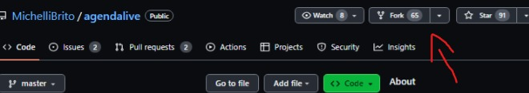

Realizar un FORK del repositorio
Vamos al proyecto que queremos realizar el pull request y realizamos un fork de este.
FORK: Copia Independiente de un proyecto existente.


Vamos al proyecto que queremos realizar el pull request y realizamos un fork de este.
FORK: Copia Independiente de un proyecto existente.
Copiamos la url del repositorio de github y lo clonamos en nuestra carpeta localmente con el siguiente comando:
git clone url
Reemplazamos url por la url del proyecto

Creamos otra rama localmente para relizar los cambios que deseamos realizar al proyecto. Essto lo hacemos con el comando:
git checkout -b nombreRama
Reemplazamos nombreRama por el nombre que deseemos poner a nuestra nueva rama.
Vamos a nuestro proyecto clonado y realizamos los cambios que deseemos implementar.
Creamos un nuevo commit para crear cambios que hemos hecho, dandole un nombre acorde a las modificaciones realzadas. Luego subimos nuestra rama local al repositorio.
git commit -m "descripcion del commit"
git push origin nombreRama
Vamos a nuestro repositorio y nos ubicamos en nuestra nueva rama, abrimos un pull request en la pestaña "contribuir".
Luego escribimos un pequeño mensaje acerca de lo que hemos realizado y por último, creamos el pull request.